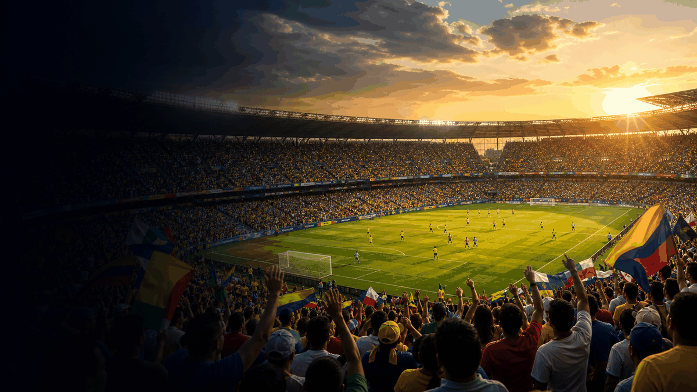
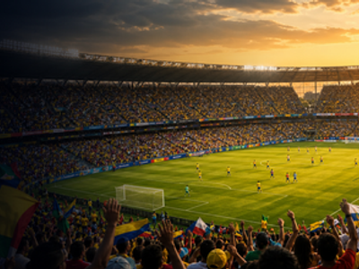

football event guide
Copa America
A compact OneSliders guide to what the event is, how the current edition works and which parts matter most.
First held1916
FrequencyIrregular / usually every 4 years
Next edition2028
RegionAmericas
History viewEdition results and parts
Use the year switcher for recent editions. The selected edition stays inside this framed sport view.

More footballInterested in more football?Explore related events, places and calendar moments.